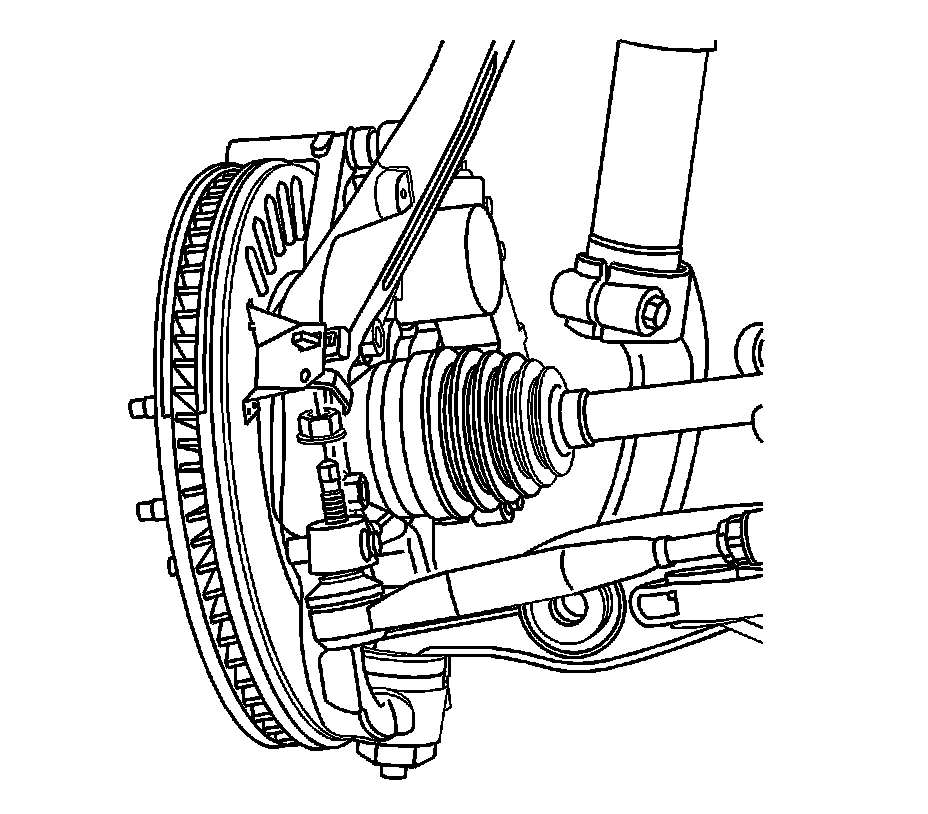
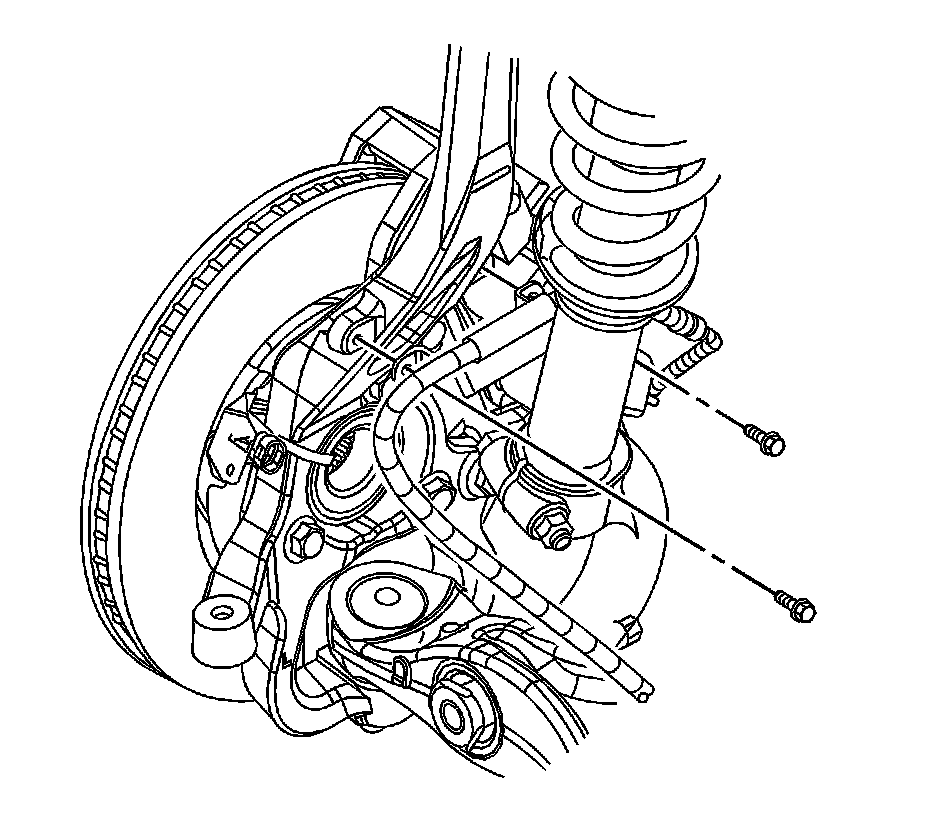
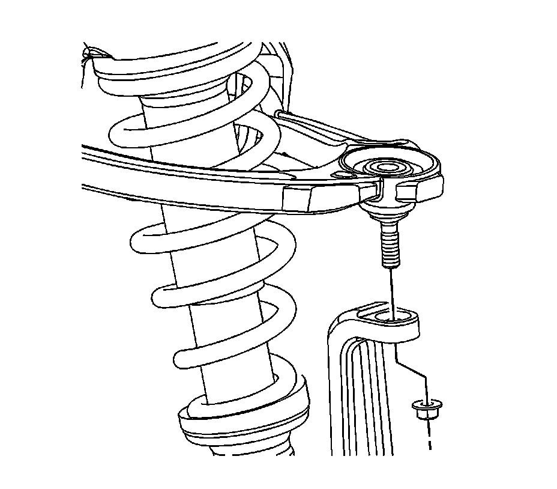
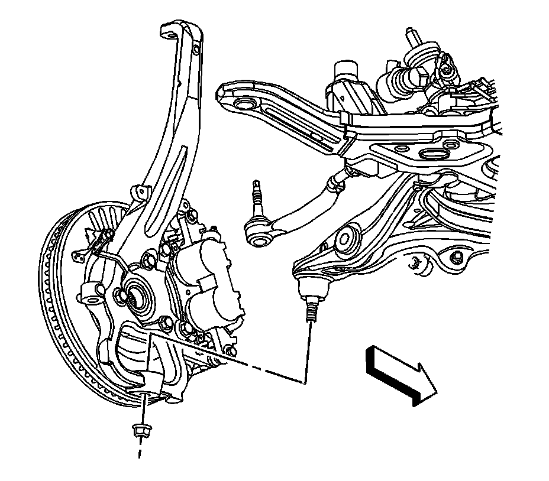
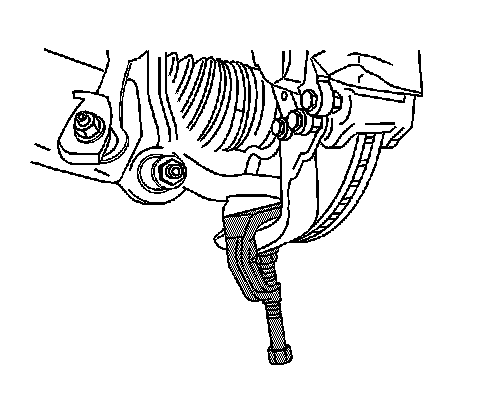

Front Suspension
Steering Knuckle Replacement
Tools Required
* J 24319-B Universal Steering Linkage Puller
* J 43631 Ball Joint Remover
Removal Procedure
Notice: Do not free the ball stud by using a pickle fork or a wedge-type tool. Damage to the seal or bushing may result.
1. Raise and support the vehicle. Refer to Lifting and Jacking the Vehicle (Service and Repair) .
2. Remove the tire and wheel. Refer to Tire and Wheel Removal and Installation (Service and Repair) .
3. Remove the wheel bearing/hub. Refer to Front Wheel Bearing and Hub Replacement (Front Suspension) .

4. Remove the outer tie rod to steering knuckle retaining nut.

5. Using the J 24319-B , disconnect the tie rod from the steering knuckle.

6. Remove the brake hose bracket to steering knuckle retaining bolts.

7. Remove the upper control arm ball stud to steering knuckle retaining nut.
8. Separate the upper control arm ball stud from the steering knuckle.

9. Remove the lower control arm ball stud to steering knuckle retaining nut.

10. Using the J 43631 , separate the lower control arm ball stud from the steering knuckle.
11. Remove the steering knuckle.
Installation Procedure
1. Install the steering knuckle to the lower control arm ball stud.
2. Install a new lower control arm ball stud retaining nut. Refer to Lower Control Arm Replacement (Front Suspension) .
3. Install the upper control arm ball stud to the steering knuckle.
4. Install a new upper control arm ball stud retaining nut. Refer to Shock Module Replacement (Front Suspension Shock Absorber) .
5. Install the brake hose bracket to the steering knuckle retaining bolts.

6. Connect the outer tie rod to the steering knuckle.
7. Install the outer tie rod retaining nut. Refer to Rack and Pinion Outer Tie Rod End Replacement (Service and Repair) .
8. Install the wheel bearing/hub. Refer to Front Wheel Bearing and Hub Replacement (Front Suspension) .
9. Install the tire and wheel. Refer to Tire and Wheel Removal and Installation (Service and Repair) .
10. Lower the vehicle.